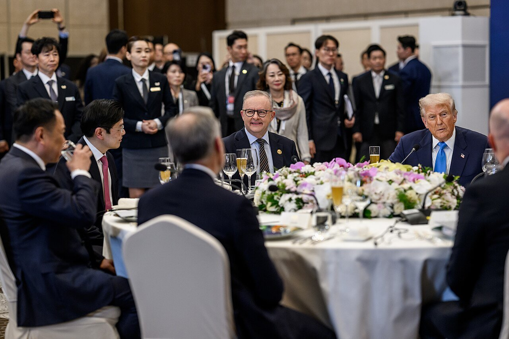
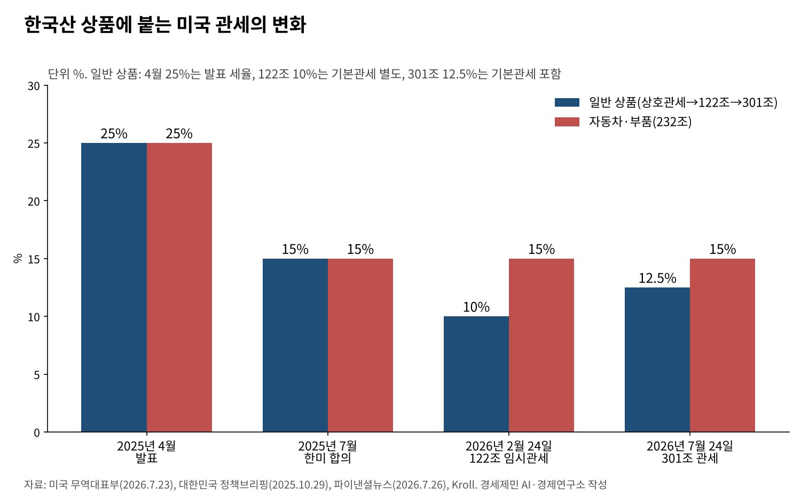
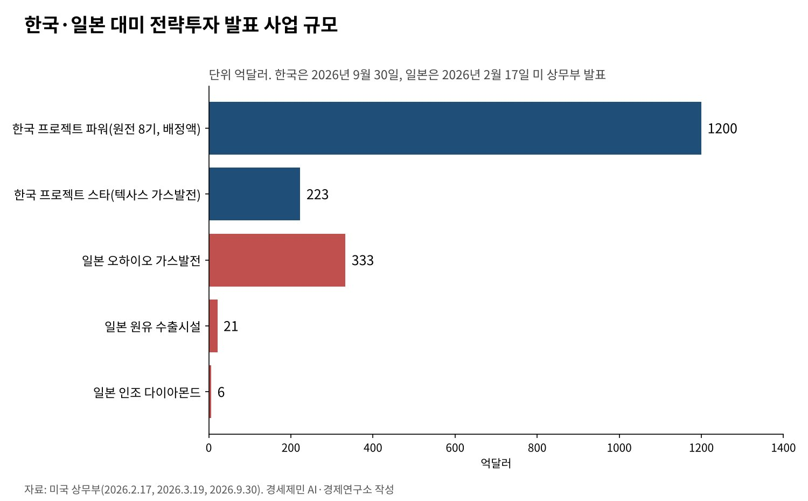

[트럼프 관세전쟁⑥] 조선 카드로 얻은 15%, 대법원 판결 뒤 301조 12.5%로 다시 짜였다
3500억달러 가운데 1500억달러는 조선 협력, 현금 투자는 연 200억달러 상한
상호관세 무효 판결 뒤 한국은 301조 12.5%, 자동차는 232조 15% 그대로
대미투자 1호 사업은 223억달러 텍사스 가스발전, 일본 1차분은 360억달러
AI경세제민=김갑봉 기자 | 한미가 관세 15%에 합의한 지 1년이 넘었다. 그 사이 15%를 받치던 법적 근거가 바뀌었다. 미국 연방대법원은 2월 20일 국제비상경제권한법(IEEPA)으로 관세를 못 매긴다고 판결했다.
미국은 무역법 122조의 10% 임시 관세를 거쳐 7월 24일 301조 관세로 갈아탔다. 한국산 상품은 기본관세를 합쳐 12.5%를 문다. 자동차는 무역확장법 232조 관세 15% 그대로다.
한국이 15%를 얻으며 내민 카드는 조선이었다. 3500억달러 가운데 1500억달러가 조선 협력이다. 투자 약속의 집행은 이제 막 시작했다. 15%의 값과 그 값을 치르는 방식을 일본과 견준다.


15%는 남고 법적 근거는 바뀌었다
판결은 러닝리소시스 대 트럼프 사건에서 6대 3으로 나왔다. 존 로버츠 대법원장이 다수의견을 썼다. 상호관세의 근거가 사라지자 백악관은 2월 24일 무역법 122조로 거의 모든 수입품에 10%를 붙였다.
122조 관세는 국제수지 적자를 이유로 최대 150일만 쓸 수 있다. 시한이 끝난 7월 24일 무역대표부(USTR)가 뒤를 이었다. 강제노동 상품의 수입 금지가 미흡하다며 60개 경제권에 301조 관세를 매겼다.
세율은 네 갈래다. 한국·일본·스위스는 기본관세와 합쳐 12.5%가 되도록 맞춘다. 유럽연합(EU)과 대만은 합쳐 10%다. 인도·캐나다·멕시코는 10%, 중국·베트남은 12.5%를 기본관세에 더 얹는다.
232조 관세를 무는 품목은 301조 관세에서 빠진다. 자동차와 부품은 지난해 합의대로 15%를 문다. 한국·일본·EU가 같은 15% 상한 안에 들고, 베트남·중국은 기본관세 위에 12.5%를 더 낸다.
남은 여유는 2.5%포인트, 과잉생산 조사가 변수
미국은 3월 한국·중국·일본·EU 등 16개 경제권을 상대로 제조업 과잉생산 301조 조사도 시작했다. 여기서 한국에 2.5%포인트를 넘는 관세가 붙으면 합계가 15%를 넘는다.
산업통상부는 두 301조 관세를 합쳐 15%를 넘지 말아야 한다고 미국에 요청했다. 정부는 7월 24일 미국이 기존 합의를 지키겠다는 입장을 다시 확인했다고 밝혔다.
제이미슨 그리어 무역대표는 9월 30일 과잉생산 관세를 정할 때 합의된 상한을 고려하겠다고 말했다. 상한을 지키느냐는 물음에는 "합의는 합의"라고 답했다고 로이터가 전했다.
블룸버그는 미국이 조사 결과 발표를 9월 미중 정상회담 뒤로 미룬다고 전했다. 10월 7일에는 한국·일본·EU·인도 등 14개 경제권이 미국과 과잉생산 대응 공동 각료성명에 서명했다.
관세 상한을 지키는 대가는 돈만이 아니다. 중국의 과잉생산에 맞서는 미국 편 연대에 이름을 올리는 일도 함께 따라온다. 15%는 통상 질서 재편에 참여하는 조건과 묶였다.
1호 사업 223억달러, 일본 1차분은 360억달러
미 상무부는 9월 30일 한미 전략투자 양해각서에 따른 첫 사업 셋을 발표했다. 1호 사업 「프로젝트 스타」는 텍사스주 엔시날의 6472메가와트 가스발전소로 사업비는 223억달러다.
이 발전소는 같은 부지의 데이터센터에 전력을 직접 공급한다. 1단계는 2029년 상업운전에 들어가고 2032년까지 단계별로 완공한다. 한국 기업은 기자재와 시공, 운영·정비에 참여를 넓힌다.
원전 사업 「프로젝트 파워」는 대형 원전 8기를 짓는 협력 틀이다. 상무부는 2000억달러 가운데 1200억달러를 여기에 배정하고 연말까지 선급금 100억달러를 보낸다고 밝혔다.
알래스카 액화천연가스(LNG) 사업은 상업적 타당성을 전제로 착수하기로 했다. 김정관 산업통상부 장관은 원전과 알래스카 사업의 추진 여부는 추가 협의 과제로 남았다고 국회 보고 뒤 설명했다.
일본은 먼저 움직였다. 상무부는 2월 17일 일본 5500억달러 투자의 1차분으로 360억달러를 발표했다. 오하이오 가스발전 333억달러, 원유 수출시설 21억달러, 인조 다이아몬드 6억달러다.

일본보다 싸게 얻었나, 셈법을 다시 본다
한국의 현금성 투자 2000억달러는 일본 5500억달러의 36%다. 한국은 현금 투자를 연 200억달러로 묶었다. 원리금을 회수할 때까지 수익을 5대5로 나누고 외환시장이 불안하면 납입을 조정한다.
나머지 1500억달러는 한국 기업이 주도하는 조선 협력이다. 보증과 선박금융을 담는다. 정부 돈이 한꺼번에 빠져나가지 않도록 짠 구조가 일본과 다른 점이다.
다만 약속을 거둘 때의 비용은 크다. 김정관 장관은 사업성이 떨어져 철수하면 미국이 관세를 올릴 수 있게 양해각서가 짜였다고 말했다. 그는 이를 「기울어진 운동장」이라고 표현했다.
결국 15%의 값은 관세율이 아니라 투자의 질로 매겨진다. 수익이 나지 않는 사업을 떠안으면 관세를 덜 낸 이익이 투자 손실로 새어 나간다. 일본보다 싸게 얻었는지는 집행이 끝나야 알 수 있다.
15%를 지키는 세 조건
첫째는 사업성 원칙이다. 상무부 발표문도 알래스카 사업에 상업적 타당성을 전제로 달았다. 원전 8기처럼 큰 사업일수록 공정과 비용 위험을 누가 지는지 계약에서 먼저 정해야 한다.
둘째는 같은 처지 국가와의 공조다. 일본과 EU도 15% 상한을 받아 놓고 과잉생산 조사 대상에 올랐다. 미국이 상한을 지키도록 세 경제권이 같은 원칙을 함께 요구할 때 협상력이 커진다.
셋째는 조선 카드의 구체화다. 9월 30일 발표에 조선 사업은 없었다. 15%를 얻은 지렛대가 아직 사업으로 바뀌지 않았다. 조선 협력이 실제 건조와 일자리로 이어져야 상한을 지킬 명분이 선다.
15%는 한 번 받아 낸 숫자가 아니라 해마다 다시 지켜야 하는 숫자가 됐다. 근거 법이 바뀌어도 상한이 남은 것은 투자 약속 덕분이다. 그 약속이 손실로 바뀌지 않도록 사업 하나하나를 따져야 한다.
참고문헌
기관 자료
- 미국 무역대표부(USTR), "USTR Takes Action in Forced Labor Section 301 Investigations", 2026년 7월 23일. https://ustr.gov/about/policy-offices/press-office/press-releases/2026/july/ustr-takes-action-forced-labor-section-301-investigations
- 미국 무역대표부(USTR), "Fourteen Economies Join the United States in Signing a Joint Ministerial Statement to Address Global Excess Capacity and Production in Key Manufacturing Sectors", 2026년 10월 7일. https://ustr.gov/about/policy-offices/press-office/press-releases/2026/october/fourteen-economies-join-united-states-signing-joint-ministerial-statement-address-global-excess
- 미국 상무부, "Korea and the United States Announce Historic Strategic Investment Projects", 2026년 9월 30일. https://www.commerce.gov/news/press-releases/2026/09/korea-and-united-states-announce-historic-strategic-investment-projects
- 미국 상무부, "Statement from Secretary Howard Lutnick: MASSIVE AMERICA FIRST TRADE WIN", 2026년 2월 17일. https://www.commerce.gov/news/press-releases/2026/02/statement-secretary-howard-lutnick-massive-america-first-trade-win
- 미국 상무부, "Joint Announcement on the Japan-U.S. Strategic Investment", 2026년 3월 19일. https://www.commerce.gov/news/press-releases/2026/03/joint-announcement-japan-us-strategic-investment
- 백악관, "Joint Fact Sheet on President Donald J. Trump's Meeting with President Lee Jae Myung", 2025년 11월 13일. https://www.whitehouse.gov/fact-sheets/2025/11/joint-fact-sheet-on-president-donald-j-trumps-meeting-with-president-lee-jae-myung/
- 대한민국 정책브리핑, 「한미, 관세협상 타결…자동차관세 15%·현금투자 연 200억 달러 상한」, 2025년 10월 29일. https://www.korea.kr/news/policyNewsView.do?newsId=148953418
연구 논문과 보고서
- Jones Day, "United States Supreme Court Invalidates IEEPA Tariffs", 2026년 2월. https://www.jonesday.com/en/insights/2026/02/united-states-supreme-court-invalidates-ieepa-tariffs
- Kroll, "A Tale of Tariff Substitution", 2026년. https://www.kroll.com/en/publications/a-tale-of-tariff-substitution
- EY Tax News, "USTR finalizes Section 301 forced labor tariffs on 60 economies; additional tariffs of 10% or 12.5% take effect 24 July 2026", 2026년 7월. https://taxnews.ey.com/news/2026-1607-ustr-finalizes-section-301-forced-labor-tariffs-on-60-economies-additional-tariffs-of-10-percent-or-125-percent-take-effect-24-july-2026
- Dorsey & Whitney, "Trump Administration Implements Replacement Tariffs Covering Most U.S. Imports", 2026년 7월 24일. https://www.dorsey.com/insights/trump-administration-implements-replacement-tariffs-covering-most-u-s-imports
언론 보도
- 경향신문, 「대미투자로 얻어낸 '관세 15%' 지켜낼까…정부 "미국, 한·미 합의 준수 입장 재확인"」, 2026년 7월 24일. https://www.khan.co.kr/article/202607241628001/
- 파이낸셜뉴스(뉴스1), 「美 301조 관세 가동…남은 건 2.5%p, 韓 '15% 상한' 뚫리면 타격 불가피」, 2026년 7월 26일. https://www.fnnews.com/news/202607260815256503
- 코리아헤럴드(연합뉴스), "US expected to delay new excess capacity tariff announcement until after Trump-Xi summit: report", 2026년 9월 18일. https://www.koreaherald.com/article/10877969
- 마이닝위클리(로이터), "US trade chief to consider trade deal tariff caps in excess capacity probe", 2026년 9월 30일. https://www.miningweekly.com/article/us-trade-chief-to-consider-trade-deal-tariff-caps-in-excess-capacity-probe-2026-09-30
- 헤럴드경제, 「산업장관 "대미투자 통해 관세 15% 재확인…합의문 명시 빠져 아쉽다"」, 2026년 10월 1일. https://biz.heraldcorp.com/article/10889694
[사진 출처]
- [사진1] The White House, "President Donald Trump attends a dinner in his honor hosted by President Lee Jae Myung of the Republic of Korea (54887836727).jpg", 위키미디어 공용, 퍼블릭 도메인. https://commons.wikimedia.org/wiki/File:President_Donald_Trump_attends_a_dinner_in_his_honor_hosted_by_President_Lee_Jae_Myung_of_the_Republic_of_Korea_(54887836727).jpg
※ 이 기사는 AI 프로그램 클로드를 활용해 작성했습니다.
관련기사
- [트럼프 관세전쟁①] 트럼프 관세압박, 미국이라고 다 유리할까
- [트럼프 관세전쟁②] 일본과 베트남은 왜 그래야만 했을까
- [트럼프 관세전쟁③] EU는 왜 어떻게 15%를 수용했나
- [트럼프 관세전쟁④] 「나머지는 15~20%」 발언과 한미 관세협상
저작권자 © AI경세제민 무단전재 및 재배포, AI학습 및 활용 금지